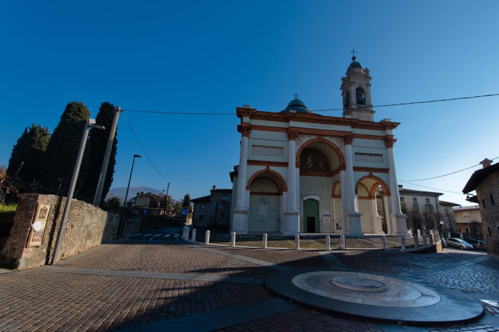
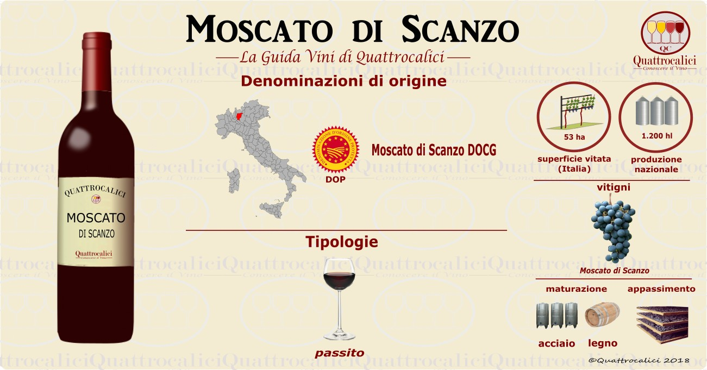

Scanzorosciate è un comune della provincia di Bergamo, conosciuto per le sue colline, i vigneti e il Moscato di Scanzo. Il territorio offre natura, storia e cultura. Scanzorosciate è formato da 5 frazioni: Scanzo, Rosciate, Negrone, Tribulina e Gavarno Vescovado.
La chiesa di Santa Maria Assunta è una delle più importanti del territorio ed è situata a Rosciate, una frazione di Scanzorosciate.

La Tenuta Serradesca è una dimora di campagna immersa nella quiete, a pochi minuti da Milano
e vicino all’aeroporto di Orio al Serio. Offre viste suggestive sui vigneti ed è una location
ideale per matrimoni in stile country-chic.
Fa parte del gruppo Acquaroli, famiglia di ristoratori attiva dal 1986.
La cucina è guidata da Maria Acquaroli, chef nota per MasterChef 4,
che utilizza ingredienti freschi e di stagione provenienti dalla Tenuta.
Scanzorosciate è l’unico luogo al mondo dove viene prodotto il Moscato di Scanzo DOCG, un vino passito raro e pregiato ottenuto da un vitigno autoctono. I pendii esposti a sud e il terreno calcareo rendono la zona ideale.
